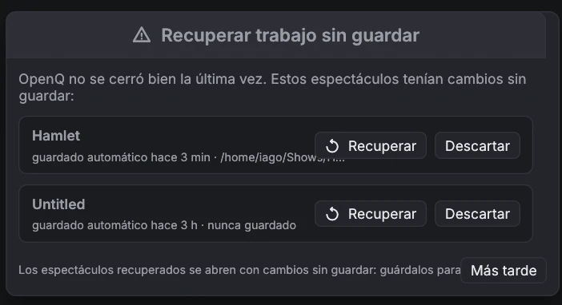

Seguridad y ayuda
7.1Seguridad ante fallos
Un espectáculo tiene que seguir cuando algo sale mal. OpnQ mantiene los problemas lo más pequeños posible y recupera tu trabajo si llega a caerse.
Autoguardado y recuperación
Mientras un espectáculo tiene cambios sin guardar, OpnQ guarda una copia cada pocos segundos. Guardar el espectáculo, o salir con normalidad, borra la copia. Si OpnQ o el ordenador se caen, el siguiente arranque te ofrece la copia:

- Recuperar abre la copia con los cambios sin guardar. Guárdala para conservarlos (se guarda en el propio archivo del espectáculo).
- Descartar borra la copia para siempre.
- Más tarde cierra la ventana; vuelve a preguntar la próxima vez.
Guardar un espectáculo escribe primero un archivo temporal y lo pone en su lugar cuando ya está a salvo en el disco, así que un fallo o un corte de luz durante el guardado deja intacta la versión anterior.
Cuando algo falla durante una función
| Qué pasa | Qué hace OpnQ |
|---|---|
| El dispositivo de audio desaparece (desconectado, servidor de audio reiniciado) | Sus sonidos se paran y la barra de estado muestra audio perdido · reconectando…. OpnQ intenta abrir el mismo dispositivo cada 2 segundos y sigue en cuanto vuelve. El vídeo y las demás cues siguen funcionando. |
| Un archivo de medios está dañado | Esa cue termina con un error en ; todas las demás cues siguen sonando. |
| Un error interno en el motor de cues | Todas las cues se paran a la vez, el cabezal se queda donde estaba y el registro explica qué pasó. El siguiente GO funciona como siempre. |
| Una cue se inicia a sí misma en un bucle sin tiempo (una cue Iniciar que apunta a sí misma, o dos que se apuntan entre sí) | Se retiene y el registro nombra la cue, en lugar de ralentizar todo el espectáculo. |
| Más de 256 sonidos a la vez | Las cues de audio adicionales se rechazan con un error en el registro. |
Los autoguardados y los informes de fallos están en la carpeta de ajustes de OpnQ: ~/.config/opnq en Linux,
~/Library/Application Support/OpnQ en macOS, %APPDATA%\OpnQ en Windows, en
recovery y crash. Un informe de fallo contiene qué salió mal y dónde; adjúntalo, por favor,
cuando informes de un problema.
Registro de errores. Cada aviso y error (entradas del registro del motor, fallos de dispositivos, guardados o
aperturas fallidos, caídas) también se escribe, con la fecha y la hora en UTC, en logs/opnq.log dentro de la misma
carpeta, para que puedas revisarlo después de la función. lo abre. Cuando supera
los 2 MB, se mueve a opnq.old.log la próxima vez que arranca OpnQ.
7.2Solución de problemas
| Problema | Prueba |
|---|---|
| No hay sonido | Mira la barra de estado. Si dice sin audio, elige otro dispositivo en Ajustes → Audio. Comprueba el volumen maestro y el nivel y el enrutado de la cue. |
| Una cue Micro no suena | Comprueba el dispositivo de entrada y los canales en su pestaña I/O; la barra de nivel muestra si llega algo. En macOS y Windows, OpnQ necesita permiso para usar el micrófono. |
| Los disparadores por código de tiempo no se disparan | Abre la ventana Timecode… de la lista y comprueba que recibe código de tiempo a la frecuencia correcta. Las cues solo se disparan mientras el código avanza por su tiempo de disparo. |
| Una cue Cámara no muestra nada | Comprueba el dispositivo en su pestaña Cámara (usa para volver a buscar) y el registro del motor. Otro programa que use la cámara puede bloquearla. |
| Una cue muestra un icono rojo | Su archivo de medios falta o no se puede leer, o se borró su cue de destino. Si el archivo se movió, haz clic en Examinar… en la pestaña Básico de la cue para encontrarlo de nuevo. Tras reconectar una unidad, dale unos dos segundos para que desaparezca. |
| Un vídeo no aparece | Abre la ventana del escenario desde el menú Vídeo. Comprueba el escenario, la opacidad y la capa de la cue, y busca errores del decodificador en . Una tarjeta gráfica solo puede mostrar imágenes hasta cierto tamaño (a menudo 8192 o 16384 píxeles de ancho). OpnQ reduce imágenes fijas, SVG y texto para que quepan, pero una película mayor se queda fuera: conviértela a un tamaño menor. |
| La barra de estado dice audio perdido · reconectando… | El dispositivo de audio desapareció. Vuelve a conectarlo o reinicia el servicio de audio; OpnQ se reconecta solo. Para usar otro dispositivo, elígelo en Ajustes → Audio. |
| OpnQ pide recuperar trabajo sin guardar | La última vez no se cerró con normalidad. Ver Seguridad ante fallos. |
| GO parece no hacer nada | La cue bajo el cabezal puede estar desarmada, o la segunda pulsación puede haber llegado dentro de la protección contra doble GO. |
| Un dispositivo remoto no encuentra el principal | Asegúrate de que el acceso remoto está activado y de que los dos están en la misma red, y escribe la dirección que aparece en el dispositivo principal. |
| "Pair this device again" (remoto) | El dispositivo se quitó en el principal, o se olvidó su clave. Abre el emparejamiento en el dispositivo principal e introduce el código nuevo. |
| Algo falla y no sabes por qué | Abre : cada aviso, error y caída queda allí con su hora. |
7.3Licencia y créditos
OpnQ se distribuye bajo la Apache License 2.0. Este resumen es orientativo; el texto en inglés es el que vale.
| Puedes | Debes |
|---|---|
| Usar OpnQ para cualquier cosa, también comercial: hacer funciones, conciertos, giras, eventos e instalaciones de pago, y cobrar por programarlos u operarlos. | Conservar el aviso de copyright, LICENSE.md y NOTICE.md en cada copia. |
| Copiarlo, modificarlo y compartirlo. | Indicar en los archivos que modifiques que han cambiado. |
| Vender copias, versiones modificadas o servicios basados en él. | No usar el nombre OpnQ como marca: la licencia no da derecho a ello. |
Copyright 2026 Iago Núñez — OpnQ (https://github.com/iagonunez/OpnQ) muestra la versión, la licencia y todos los avisos de terceros.
Son las fuentes (Inter, JetBrains Mono y Barlow Condensed bajo la SIL Open Font License; Material Symbols bajo Apache 2.0; las
fuentes incluidas en egui) y las bibliotecas Rust de código abierto con las que se construye OpnQ, cada una con su propia
licencia. Los mismos textos están en NOTICE.md y THIRD_PARTY_LICENSES.md junto al programa.
OpnQ reproduce vídeo con las bibliotecas FFmpeg. En Windows y
macOS el instalador pone dentro de OpnQ una compilación sin partes GPL, con su licencia en la carpeta Licenses;
en Linux OpnQ usa el FFmpeg del sistema. FFmpeg tiene su propia licencia. Si pasas un OpnQ compilado a otras personas, usa
un FFmpeg sin partes GPL, o la GPL 3 cubrirá todo el programa. Ver NOTICE.md.